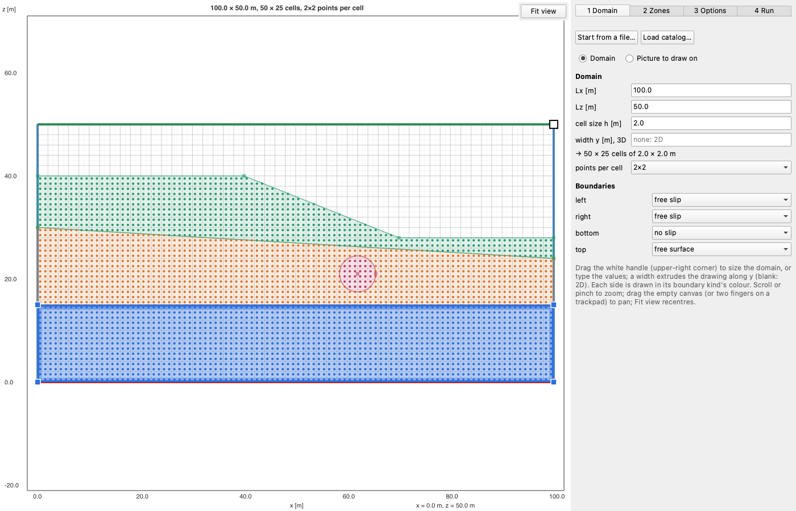
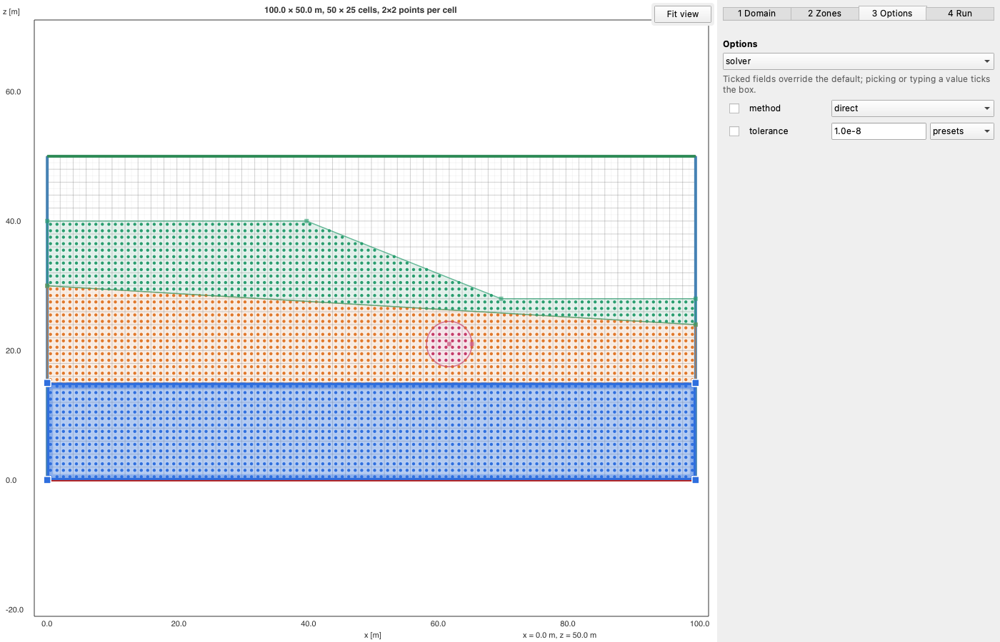
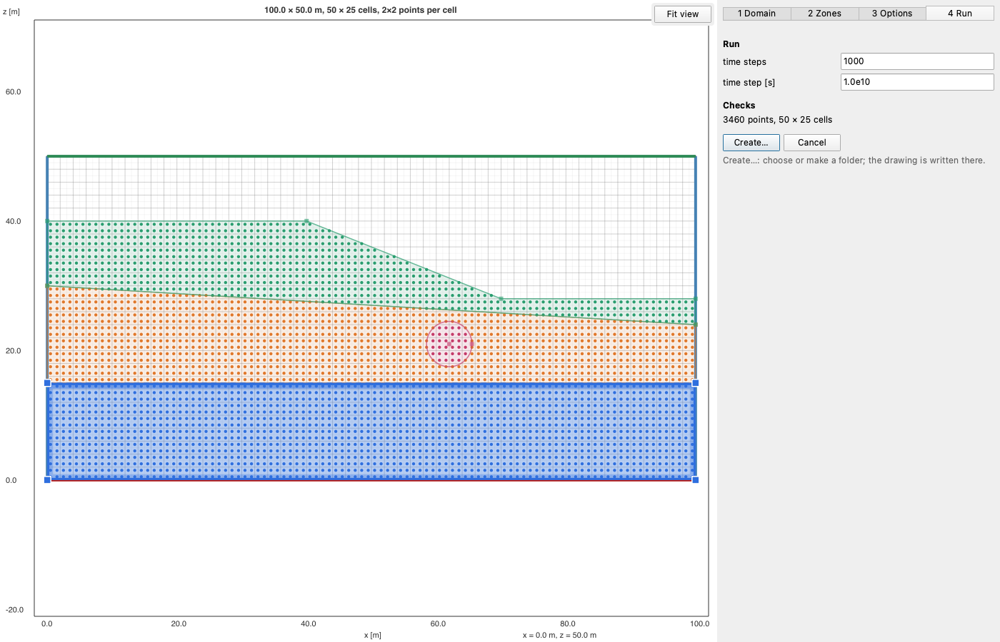

Drawing in the window
using EasyDraw
l = draw() # a new domain, on the Domain step
l = draw(l) # edit a layout, on the Zones step
l = draw("model_layout.toml") # edit a layout file
l = draw(l; catalog="catalog.toml") # with what your program offers (see Catalogs)draw opens the window and waits. Create… writes the layout into a folder you choose and returns it; Cancel, or closing the window, returns nothing. The first window of a session takes about 20 s, while Qt loads; the next ones open at once.
The window has a canvas on the left and four steps on the right, as tabs: Domain, Zones, Options (only when the catalog has options) and Run. You can go back and forth between them at any time.
The pictures on this page show a slope over two layers, with a lens, drawn with a small catalog: two zone properties (ρ and η), three boundary kinds, three options and two run settings.
Domain

- Size: drag the white handle at the domain's upper-right corner, or type
Lx,Lzand the cell sizeh. Cells are square: the numbers of cells follow fromh, shown under the fields. - Width y, 3D: a width extrudes the drawing along y; leave it blank for 2D.
- Points per cell: the canvas previews
ni×nipoints per cell, at the centres of the sub-cells: the pointspointsreturns. - Boundaries: a boundary kind per side, from the catalog. Each side is drawn in its kind's colour.
- Start from a file… opens a layout file (or your program's own file, see Catalogs), replacing what is drawn.
- Load catalog… replaces the catalog with a catalog file's (see Catalogs).
Picture to draw on
Choose Picture to draw on to trace zones over a scanned cross-section or a map, any picture Qt reads:
- Pick the picture. It opens across the domain's width, under the grid.
- Set its scale: Measure a scale bar, click the bar's two ends on the picture, type its length in metres and press Enter (Esc cancels). Or type the picture's width.
- Place it: its lower-left corner (
x,z, 0 by default; a negative value crops it) and its opacity.
The domain follows the picture, from the origin to the picture's far corner, in whole cells of size h; typing Lx or Lz afterwards still changes it. Choosing Domain again hides the picture and keeps it. The picture is a drawing aid only: it is not saved with the layout.
Zones

+ New zone ▾ draws a new zone:
- Draw: a polygon. Click its vertices, then click the first vertex again, or press Enter, to close it.
- Rectangle: two opposite corners.
- Triangle: three corners; it closes on the third.
- Circle: its centre, then a point on it.
A new zone is cut out of the zones it overlaps: their outlines then follow it and share its vertices. Zones written in code may still overlap; there, the later zone wins, and the earlier one is drawn dashed under it.
Snapping. Clicks snap to existing vertices first, then to edges (snap shapes), then to the sub-cells' corners, every h/ni (snap grid), so a vertex never sits on a point. The cursor shows what it snapped to: a square on a vertex, a diamond on an edge, a ring on the grid. A vertex placed on another zone's edge is inserted into that edge, so the two zones share it.
Editing:
- Drag a vertex to move it, in every zone that shares it. Its coordinates can then be typed exactly in the vertex row; × deletes it.
- Click an edge to insert a vertex there; right-click a vertex to delete it.
- Drag a circle's centre or its handle, or type its centre and radius in the circle row.
- Click inside a zone to select it, or pick it in the list.
The selected zone: its name and its properties, from the catalog. A blank property takes the default shown beside it. ↑ and ↓ move the zone in the list: a zone lower in the list wins where zones overlap. delete removes it; undo and redo undo and redo any edit. points shows or hides the points; the line under the help text counts them per zone.
Keys:
| Key | While drawing a zone | Otherwise |
|---|---|---|
| Enter | close the polygon | |
| Backspace | remove the last vertex | |
| Esc | cancel the zone | |
| Cmd/Ctrl + Z | remove the last vertex | undo |
| Shift + Cmd/Ctrl + Z, or Cmd/Ctrl + Y | redo |
Moving around
These work on every step:
- Zoom: the mouse wheel, a trackpad pinch, or Cmd/Ctrl + scroll, about the pointer.
- Pan: drag the empty canvas, drag with the middle button (also while drawing), or move two fingers on a trackpad.
- Fit view (upper-right corner of the canvas) recentres on the domain.
Options

The catalog's options, on pages by the first part of their keys (solver.method is on page solver), picked in the drop-down at the top. An option is used only when its box is ticked: picking or typing a value ticks it, and unticking it restores the default. A number can be typed, or picked from its presets; a list option is a grid of check boxes.
The ticked options are in the layout's options, nested by the parts of their keys:
l.options["solver"]["method"] # set only when ticked
get(get(l.options, "solver", Dict()), "method", "direct") # with the defaultRun

The catalog's run settings, then the Checks: what your program reports on the layout, by default the number of points and the zones that reach outside the domain or hold no point. An error blocks Create…; a warning needs a second click on it.
Create… asks for a folder (choose one, or make one with the dialog's New Folder button) and writes the layout there, by default as <folder name>_layout.toml. The window closes and draw returns the layout, whose folder is that folder. Cancel closes the window and returns nothing.
The run settings are in the layout's run:
l.run["nt"]